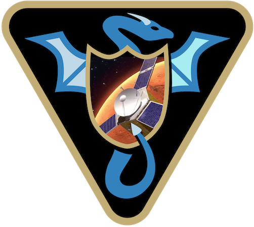

Download
{kind=link}
The latest Vizard application binaries binaries can be directly downloaded using the following links. Install the program in the typical Applications folder or Desktop.
Warning
The custom Unity asset loading requires Vizard v2.1.1 or later.
Warning
The newer version of Linux use a new GUI library that is not supported by the
Vizard File Browser plug-in currently. If you can’t select files to open in the GUI
then use the loadFile command line option discussed in Command Line Launching
The following optional downloads contain models for a range space objects that are too large to include in the main Vizard binary. You download the desired binaries for the platform you are using and put them in a specific file location. On start-up, Vizard checks for their presence and will load in the space object model if needed.
The bundles depend on the Unity version used to build Vizard. After opening Vizard, go to File/About Vizard
to see what version of Unity was used to build the application. Select the appropriate year in the download table.
The bundle must be installed in specific directories on each platform. On macOS install the bundle in:
~/Library/Application Support/Vizard/Vizard/Resources/CustomModels
On Linux, install the bundle contents in:
home/your_user_name/.config/unity3d/Vizard/Vizard/Resources/CustomModels
On Window, install the bundle contents in:
C:/Users/your_user_name/AppData/LocalLow/Vizard/Vizard/Resources/CustomModels
Download the platform specific bundles file, unzip it, and move the contents to the CustomModels folder.
Note
Vizard does not support sub-folders in the CustomModels folder. All Unity asset files should
be directly installed in the CustomModels folder.
Asset Name |
Summary |
|||
|---|---|---|---|---|
Asteroid model package including high fidelity models of Bennu, Ryugu, Itokawa, as well as some generic asteroid models |
||||
Package including models for Phobos and Deimos |
||||
Package including models for spacecraft IceSat2 and Kepler |